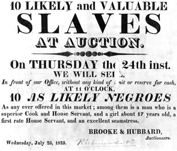

|
1837 - Chicago becomes a city with a population with over 4,000. [source] |

1837 - Slavery is still legal in the Southern States. [source] |
 1886 - Haymarket Bombing sparks labor movement. [source]
1886 - Haymarket Bombing sparks labor movement. [source] |
1877 - Jim Crow laws are instituted. [source] |
|
1893 - The World's Columbian Exposition is hosted in Chicago; The nickname "White City" comes about. [source] |
 1900 - Ida B. Wells, a famous black feminist, helps to found the NAACP branch in Chicago. [source]
1900 - Ida B. Wells, a famous black feminist, helps to found the NAACP branch in Chicago. [source] |
|
1906 - Upton Sinclair's The Jungle shows the horrible working conditions of Chicago's meatpacking factories. [source] |
1910 - 78% of Black Chicagoans live in the South Side. Segregation via class emerges. [source] |
|
1912 - World War I begins. [source] |
1912 - Industries start to open up to African Americans. [source] |
|
1919 First Red Scare in the US. [source] |
1919 - Black people were left out of the labor movement; Race riots begin due to anger over black people moving into white-dominated neighborhoods. [source] |
|
1950-1960 - Chicago's population shrinks as more people move to the suburbs and/or Sun Belt. [source] |
1963-1968 - Jim Crow laws are signed out of law. [source] |
|
2011 - First Jewish Mayor of Chicago, Rahm Emanuel, is elected into office. [source] |
2010 - Census exposes Chicago as the most segregated city in the US, despite being the 7th most diverse city. [source] |